Los números reales
Los números irracionales
Un número es irracional si posee infinitas cifras decimales no periódicas, por tanto no se pueden expresar en forma de fracción.
El número irracional más conocido es 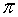, que se define como la relación entre la longitud de la circunferencia y su diámetro.
= 3.141592653589...
Otros números irracionales son:
El número e aparece en procesos de crecimiento, en la desintegración radiactiva, en la fórmula de la catenaria, que es la curva que podemos apreciar en los tendidos eléctricos.
e = 2.718281828459...
El número áureo, , utilizado por artistas de todas las épocas (Fidias, Leonardo da Vinci, Alberto Durero, Dalí,..) en las proporciones de sus obras.
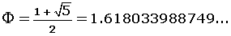
Los números reales
El conjunto formado por los números racionales e irracionales es el conjunto de los números reales, se designa por  .
.
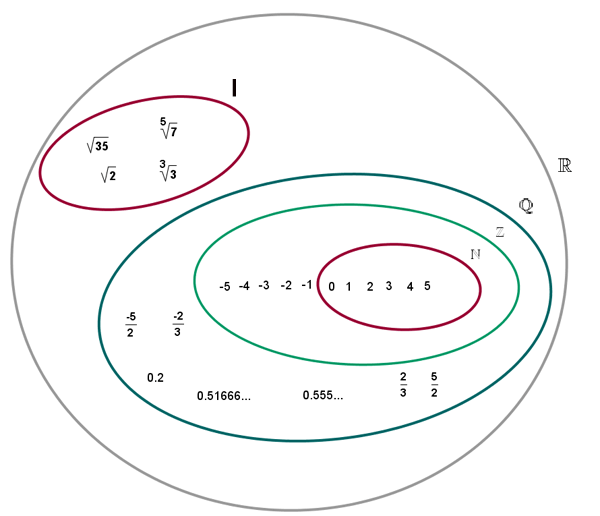
Con los números reales podemos realizar todas las operaciones, excepto la radicación de índice par y radicando negativo, y la división por cero.
La recta real
A todo número real le corresponde un punto de la recta y a todo punto de la recta un número real.
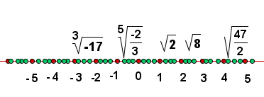
Representación de los números reales
Los números reales pueden ser representados en la recta con tanta aproximación como queramos, pero hay casos en los que podemos representarlos de forma exacta.
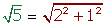
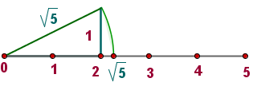
Operaciones de números reales
1Suma de números reales
1 Interna:
El resultado de sumar dos números reales es otro número real.
a + b 
+ 
2 Asociativa:
El modo de agrupar los sumandos no varía el resultado.
(a + b) + c = a + (b + c) ·
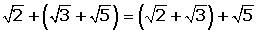
3 Conmutativa:
El orden de los sumandos no varía la suma.
a + b = b + a
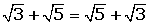
4 Elemento neutro:
El 0 es el elemento neutro de la suma porque todo número sumado con él da el mismo número.
a + 0 = a
+ 0 =
5 Elemento opuesto:
Dos números son opuestos si al sumarlos obtenemos como resultado el cero.
e − e = 0
El opuesto del opuesto de un número es igual al mismo número.
−(−) =
2Diferencia de números reales
La diferencia de dos números reales se define como la suma del minuendo más el opuesto del sustraendo.
a − b = a + (−b)
3Producto de números reales
La regla de los signos del producto de los números enteros y racionales se sigue manteniendo con los números reales.
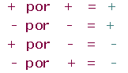
1 Interna:
El resultado de multiplicar dos números reales es otro número real.
a · b 
2 Asociativa:
El modo de agrupar los factores no varía el resultado. Si a, b y c son números reales cualesquiera, se cumple que:
(a · b) · c = a · (b · c)
(e · ) · = e · ( ·)
3 Conmutativa:
El orden de los factores no varía el producto.
a · b = b · a
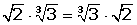
4 Elemento neutro:
El 1 es el elemento neutro de la multiplicación, porque todo número multiplicado por él da el mismo número.
a ·1 = a
· 1 =
5 Elemento opuesto:
Un número es inverso del otro si al multiplicarlos obtenemos como resultado el elemento unidad.
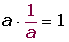
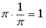
6 Distributiva:
El producto de un número por una suma es igual a la suma de los productos de dicho número por cada uno de los sumandos.
a · (b + c) = a · b + a · c
· (e + ) = · e + ·
7 Sacar factor común:
Es el proceso inverso a la propiedad distributiva.
Si varios sumandos tienen un factor común, podemos transformar la suma en producto extrayendo dicho factor.
a · b + a · c = a · (b + c)
· e + · = · (e + )
4División de números reales
La división de dos números reales se define como el producto del dividendo por el inverso del divisor.
Definición de intervalo
Se llama intervalo al conjunto de números reales comprendidos entre otros dos dados: a y b que se llaman extremos del intervalo.
Intervalo abierto
Intervalo abierto, (a, b), es el conjunto de todos los números reales mayores que a y menores que b.
(a, b) = {x  / a < x < b}
/ a < x < b}
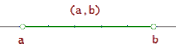
Intervalo cerrado
Intervalo cerrado, [a, b], es el conjunto de todos los números reales mayores o iguales que a y menores o iguales que b.
[a, b] = {x  / a ≤ x ≤ b}
/ a ≤ x ≤ b}
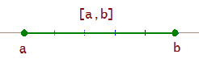
Intervalo semiabierto por la izquierda
Intervalo semiabierto por la izquierda, (a, b], es el conjunto de todos los números reales mayores que a y menores o iguales que b.
(a, b] = {x  / a < x ≤ b}
/ a < x ≤ b}
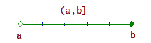
Intervalo semiabierto por la derecha
Intervalo semiabierto por la derecha, [a, b), es el conjunto de todos los números reales mayores o iguales que a y menores que b.
[a, b) = {x  / a ≤ x < b}
/ a ≤ x < b}
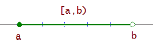
Nomenclatura para varios conjuntos
Cuando queremos nombrar un conjunto de puntos formado por dos o más de estos intervalos, se utiliza el signo  (unión) entre ellos.
(unión) entre ellos.
Semirrectas
Las semirrectas están determinadas por un número. En una semirrecta se encuentran todos los números mayores (o menores) que él.
x > a
(a, +∞) = {x  / a < x < +∞}
/ a < x < +∞}
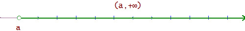
x ≥ a
[a, +∞) = {x  / a ≤ x < +∞}
/ a ≤ x < +∞}
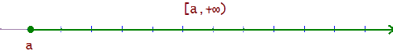
x < a
(-∞, a) = {x  / -∞ < x < a}
/ -∞ < x < a}
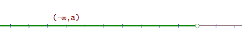
x ≤ a
(-∞, a] = {x  / -∞ < x ≤ a}
/ -∞ < x ≤ a}
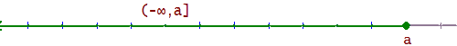
Valor Absoluto
Valor absoluto de un número real a, se escribe |a|, es el mismo número a cuando es positivo o cero, y opuesto de a, si a es negativo.
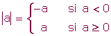
|5| = 5 |-5 |= 5 |0| = 0
|x| = 2 x = −2 x = 2
|x|< 2 − 2 < x < 2 x (−2, 2 )
|x|> 2 x< 2 ó x>2 (−∞, 2 )  (2, +∞)
(2, +∞)
|x −2 |< 5 − 5 < x − 2 < 5
− 5 + 2 < x < 5 + 2 − 3 < x < 7
Propiedades:1 Los números opuestos tienen igual valor absoluto.
|a| = |−a|
Ejemplo: |5| = |−5| = 5
2 El valor absoluto de un producto es igual al producto de los valores absolutos de los factores.
|a · b| = |a|· |b|
Ejemplo: |5 · (−2)| = |5| · |(−2)| |− 10| = |5| · |2| 10 = 10
3 El valor absoluto de una suma es menor o igual que la suma de los valores absolutos de los sumandos.
|a + b| ≤ |a| + |b|
Ejemplo: |5 + (−2)| ≤ |5| + |(−2)| |3| = |5| + |2| 3 ≤ 7
Distancia
La distancia entre dos números reales a y b, que se escribe d(a, b), se define como el valor absoluto de la diferencia de ambos números:
d(a, b) = |b − a|
Ejemplo: La distancia entre −5 y 4 es:
d(−5, 4) = |4 − (−5)| = |4 + 5| = |9|
Definición de entorno
Se llama entorno de centro a y radio r, y se denota por Er(a) o E(a,r), al intervalo abierto (a-r, a+r).
Er(a) = (a-r, a+r)
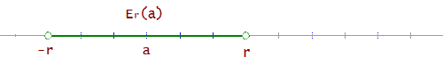
Los entornos se expresan con ayuda del valor absoluto.
Er(0) = (-r, r) se expresa también |x|<r, o bien, -r < x < r.
Er(a) = (a-r, a+r) se expresa también |x-a|<r, o bien, a a-r < x < a+r.
Entornos laterales
Por la izquierda
Er(a-) = (a-r, a]
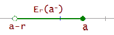
Por la derecha
Er(a+) = [a, a+r)
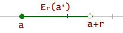
Entorno reducido
Se emplea cuando se quiere saber qué pasa en las proximidades del punto, sin que interese lo que ocurre en dicho punto.
E r*(a) = { x (a-r, a+r), x ≠ a}
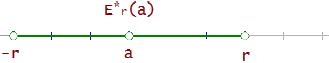